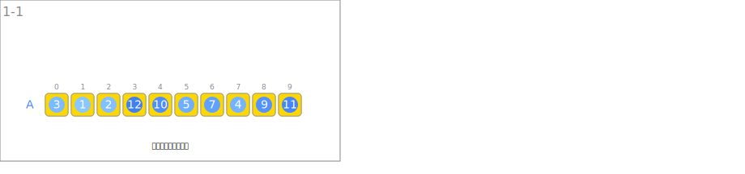
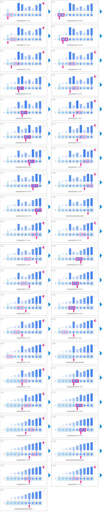
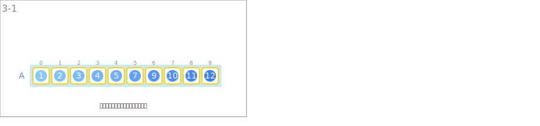

シンボル
| データ | ||
|---|---|---|
 | 整数の列 | A |
| 入力 | ||
|---|---|---|
 | 整数の列を入力します。 | |
| 整列 | ||
 | 隣り合う要素の大小関係を調べます。 | if A[j-1] > A[j]: |
 | ２つの要素をスワップします。 | swap(A[j-1], A[j]) |
 | 最後にスワップが行われた位置を更新していきます。 | last |
| 未ソート部分の先頭を指します。 | left | |
| 未ソート部分の末尾を指します。 | right | |
 | ソート済みの部分を拡張していきます。 | 区間[0, i) |
| 出力 | ||
 | 整列された整数の列を出力します。 | |
アニメーション
入力

整列

出力
